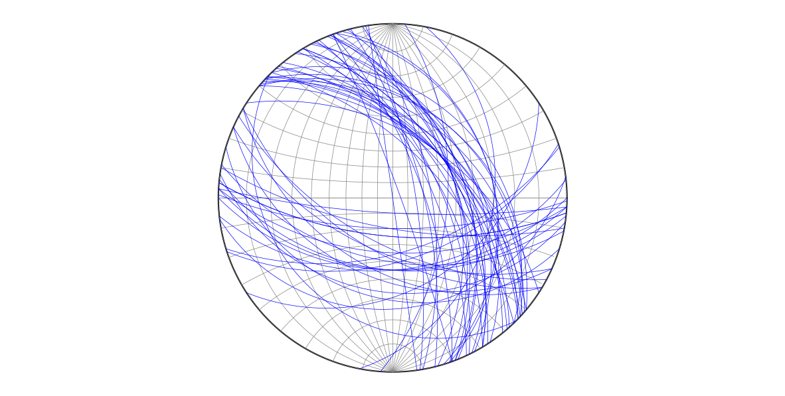
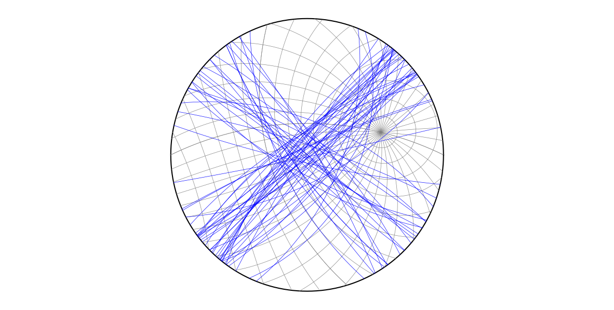

Plotting great and small circles using rotations
Plotting great and small circles using rotations#
# Import libraries
import numpy as np
import matplotlib.pyplot as plt
pi = np.pi
# Import Stereonet and related functions
import sys, os
sys.path.append(os.path.abspath("../../"))
from compgeo.pole import pole_from_plane, plane_from_pole
from compgeo.great_circle import great_circle
from compgeo.geogr_to_view import geogr_to_view
from compgeo.stereonet import stereonet
# Draw a lower hemisphere equal angle stereonet,
# 10 deg interval grid
trdv, plgv, intrad = np.radians([0, 90, 10])
fig, ax = stereonet(trdv,plgv,intrad,0)
# Read the strike-dip data from the Big Elk anticline
beasd=np.loadtxt(os.path.abspath("../../data/ch5-6/beasd.txt"))
# Plot the great circles
for i in range(beasd.shape[0]):
path = great_circle(beasd[i,0]*pi/180,
beasd[i,1]*pi/180,0)
ax.plot(path[:,0], path[:,1], "b", linewidth=0.5)

# Draw the same data in an equal angle stereonet,
# but make the view direction = fold axis
trdv, plgv = np.radians([125, 26])
fig, ax = stereonet(trdv,plgv,intrad,0)
# Plot the great circles
for i in range(beasd.shape[0]):
# pole to bed
trdp, plgp = pole_from_plane(beasd[i,0]*pi/180,
beasd[i,1]*pi/180)
# transform pole
trdpt, plgpt = geogr_to_view(trdp,plgp,trdv,plgv)
# bed from transformed pole
striket, dipt = plane_from_pole(trdpt,plgpt)
# plot great circle
path = great_circle(striket,dipt,0)
ax.plot(path[:,0], path[:,1], "b", linewidth=0.5)

# if you want to save the stereonet run this cell
fig.savefig("stereonet.png", dpi=300)